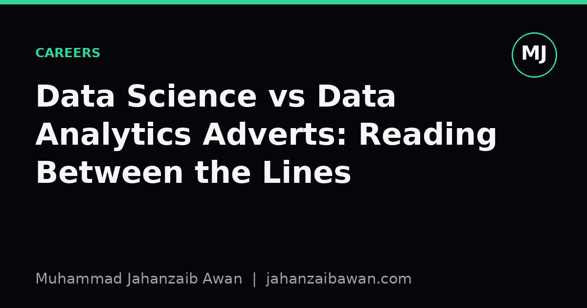

Data Science vs Data Analytics Adverts: Reading Between the Lines
Job titles are marketing copy, not job descriptions. Here is how to decode an advert before you waste an application on the wrong role.

Why the title tells you almost nothing
I have read enough job adverts now to know that the title at the top is often decided by someone in HR who copied the last posting and changed the salary band. A company can call a role 'Data Scientist' when the actual job is building weekly revenue dashboards in a BI tool, and it can call a role 'Data Analyst' when the actual job involves training models and worrying about data leakage. The title is marketing copy. It signals what the company thinks sounds impressive to candidates, not what you will spend your Tuesday afternoon doing.
This matters because the two jobs, when done properly, require different instincts. Data analytics is fundamentally about explaining what has already happened: which product lines underperformed, why churn ticked up in a region, how a campaign affected sign-ups. Data science, at its best, is about building something that makes a decision or a prediction on new data it has not seen before: a model that scores credit risk, a recommender that ranks products, a classifier that flags fraud. One is retrospective and explanatory, the other is predictive and operational. Many adverts blur this on purpose because the hiring manager is not entirely sure what they need either.
The practical consequence is that you can accept an offer expecting to build models and spend your first three months writing SQL queries for a stakeholder who wants a new chart every Monday. That is not a disaster, SQL and stakeholder work are valuable skills, but if you took the job because you wanted to practise feature engineering and model evaluation, you will be frustrated within a quarter. Learning to read the advert properly before you apply saves everyone time, including the recruiter.
The verbs and nouns that give it away
Adverts leak information through their verbs. Analytics adverts lean on words like 'report', 'visualise', 'monitor', 'track', 'present', 'dashboard', 'stakeholder', 'KPI'. Data science adverts lean on 'build', 'train', 'deploy', 'experiment', 'optimise', 'pipeline', 'model', 'evaluate'. If an advert says the role will 'build and maintain dashboards to track key metrics for leadership', that is an analytics job no matter what the title says. If it says the role will 'design and validate predictive models for customer lifetime value', that is a data science job even if the title says 'analyst'.
The tools mentioned are another tell, though a noisier one. Heavy emphasis on Tableau, Power BI, Looker, or 'advanced Excel' points towards analytics. Heavy emphasis on Python, scikit-learn, PyTorch, experiment tracking, or model deployment points towards data science. Be careful though: plenty of data scientists use SQL and a BI tool daily as part of exploratory work, so a single mention of Tableau in an otherwise model-heavy advert does not flip the category. What matters is the overall weight of the list, and specifically whether the advert describes an end product that is a decision, a prediction, or a document.
I also pay attention to what success looks like in the advert, when it bothers to say. 'Success in this role means leadership has clear, timely visibility into performance' is an analytics outcome. 'Success in this role means the churn model reduces false positives by a meaningful margin over the current baseline' is a data science outcome. The second kind of statement, even when vague about numbers, tells you the team already thinks in terms of model performance and baselines, which usually means there is an evaluation culture in place, or at least an intention to build one.
A worked example: two adverts, same seniority, same salary band
Picture two postings, both titled 'Senior Data Scientist', both offering a similar salary. The first says: 'You will work with the commercial team to understand sales trends, build interactive dashboards, and present monthly insights to senior stakeholders. Strong SQL and experience with Power BI required. Python is a plus.' Notice the structure: the deliverable is insight delivered as a presentation or dashboard, the primary tool is SQL plus a BI product, and Python is optional rather than central. This is an analytics role wearing a data science badge, and that is fine if dashboards and stakeholder storytelling are what energise you.
The second says: 'You will own the end-to-end lifecycle of our pricing model, from feature engineering through to deployment and monitoring in production, working closely with engineering to maintain a robust evaluation pipeline against a held-out test set.' Here the deliverable is a model in production, the verbs are about building and maintaining something that makes autonomous decisions, and there is an explicit mention of held-out evaluation, which tells you the team cares about honest performance measurement rather than vanity metrics on training data. This is a genuine data science role regardless of the title.
If you only had thirty seconds per advert, I would suggest scanning for three things: the noun that follows 'build' or 'own', the tool list in order of emphasis, and whether evaluation or validation is mentioned at all. An advert that never mentions how success is measured on unseen data is either an analytics role, or a data science role at a company that has not yet thought seriously about evaluation, which is itself useful information about how mature the team is.
What to do with this before you apply
Before sending an application, I write down in one sentence what I think my typical Wednesday would look like in that role, based only on the advert. If I cannot picture a concrete Wednesday, that is a sign the advert is vague enough that the interview itself needs to clarify scope, and I treat the first call as a scoping exercise rather than a formality. Asking directly in the interview, 'what does the team's current model evaluation process look like, and what is the split between building new models and maintaining dashboards', is a fair question and a good one, because the answer tells you more than the job title ever will.
It is also worth asking who the role reports to. Analytics roles often sit under commercial, marketing, or finance functions and answer to a business stakeholder, while data science roles more often sit under engineering or a dedicated data science function and answer to someone who can discuss model performance in technical detail. Neither reporting line is better, but they shape your day-to-day collaborators and the kind of feedback you will get on your work.
My honest takeaway is this: do not trust the title, trust the verbs, the deliverables, and whether evaluation on unseen data gets a mention at all. Read two or three sentences past the headline and you will usually know within a minute whether you are looking at a reporting job or a modelling job, and that minute of careful reading is cheaper than finding out the hard way three months into a contract.